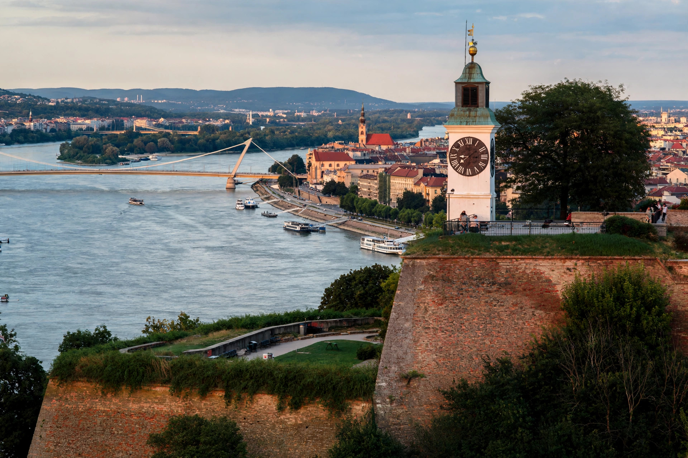

| Petrovaradin Fortress | |
|---|---|
| Location | Petrovaradin, Novi Sad, Serbia |
| Built | 1692–1780 |
| Builder | Habsburg Monarchy |
| Type | Bastion fortress |
Petrovaradin Fortress is a fortress on the right bank of the Danube, opposite Novi Sad in northern Serbia. Known as the "Gibraltar on the Danube", it was built by the Habsburg Monarchy between 1692 and 1780 to defend the frontier against the Ottoman Empire and has never been taken by storm.

The site was fortified since Roman times (the fort of Cusum stood here). The present bastion fortress was designed by French engineers and built under Emperor Leopold I; it withstood an Ottoman siege in 1716 before the nearby Battle of Petrovaradin, won by Eugene of Savoy. Its 16 km of underground countermine galleries and casemates are among the most extensive in Europe. With the removal of the Turkish threat it became a garrison and later a museum town.
The fortress's landmark clock tower is famous for its "reversed" hands: the minute hand is longer than the hour hand in the usual fashion, but because boatmen on the Danube needed to read the hour from a distance, the large hand indicates the hours and the small hand the minutes — the opposite of ordinary clocks.
The fortress houses museums, galleries, restaurants and artist studios, and since 2001 its lower town has hosted the EXIT music festival each summer.